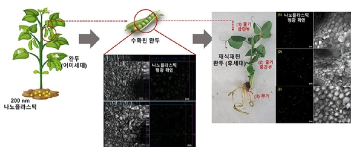

안윤주 건국대 교수팀, 토양생태계 내 미세·나노플라스틱 순환 가능성 제시 플라스틱 사용량 증가에 따라 환경으로 유입되는 플라스틱 양 또한 증가하고 있다. 환경으로 유입된 플라스틱은 인위적, 환경적 요인에 의해 1㎜ 이하의 미세플라스틱으로 쪼개질 수 있다. 이러한 미세플라스틱은 생물종에 섭취 또는 흡수돼 영향을 미치고, 생태계의 교란을 야기할 수 있다.
나노플라스틱에 노출된 어미세대의 완두로부터 수확된 완두콩과 이를 재식재한 후세대 식물에서 나노플라스틱의 녹색 형광이 확인됐다. 이는 토양환경 내에서 식물의 뿌리, 줄기 뿐 아니라 열매로까지 나노플라스틱이 전이되어 후세대 식물에도 전이될 수 있음을 나타낸다. [사진=한국연구재단]
안 교수 연구팀이 완두를 대상으로 미세·나노플라스틱의 이동을 관찰한 결과, 미세·나노플라스틱에 노출된 식물에서 생산된 열매와 그 열매에서 성장한 후세대 식물에서도 미세플라스틱이 확인됐다.안 교수팀은 선행 연구를 통해 식물이 토양환경에서 미세·나노플라스틱을 흡수하는 메커니즘을 규명한 바 있다. 또한 식물이 흡수한 미세·나노플라스틱이 줄기와 잎 등 식물의 상부조직까지 도달하는 것을 확인했다. 이번 연구에서는 미세·나노플라스틱에 노출된 식물의 열매를 비롯해 해당 식물의 후세대로 나노플라스틱 전이된 것을 밝힌 것이다.
연구팀은 중요 식량자원이자 독성연구 표준시험종인 완두(Pisum sativum)를 대상 시험종으로 선정하고, 미세·나노플라스틱에 노출시켜 열매인 완두콩과 다음 세대 로의 전이를 확인했다.
연구팀은 200 nm 크기의 형광 폴리스티렌 미세·나노플라스틱으로 오염된 토양에 완두를 약 60일간 노출시킨 후 완두콩을 수확했다. 수확한 완두콩을 공초점 레이저 주사현미경으로 관찰한 결과, 완두콩의 배아와 떡잎에서 미세·나노플라스틱이 확인됐다. 또한 수확한 완두콩을 미세·나노플라스틱에 오염되지 않은 토양에 재식재하여 14일간 배양한 뒤 관찰한 결과, 표피보다 세포간 및 세포내 공간에서 미세·나노플라스틱이 관찰됐다.
이는 미세·나노플라스틱이 외부에서 유입된 것이 아닌 수확한 완두콩 내 배아와 떡잎에 분포했던 미세·나노플라스틱이 식물 전체 세포로 이동했음을 보여준다고 연구팀은 설명했다. 즉, 미세·나노플라스틱에 직접 노출되지 않은 후세대 식물도 어미세대 식물을 통해 미세·나노플라스틱에 노출될 수 있음을 시사한다.
안윤주 교수는 이번 연구는 미세·나노플라스틱에 노출된 식물이 생산한 열매와 그 열매로부터 기인하는 후세대 식물로 플라스틱이 순환되는 가능성을 제시한 것이라며, 이를 통해 미세·나노플라스틱①이 인간과 동물이 섭취하는 열매에 전이돼 소비자에게 도달할 수 있음을 짐작케 한다라고 전했다.
이 연구는 과기정통부와 교육부, 한국연구재단이 추진하는 중견연구사업 및 이공분야학문후속세대양성사업②으로 수행됐으며, 환경과학분야 국제학술지 저널 오브 해저드스 머티리얼스(Journal of Hazardous Materials)에 1월 14일 온라인 게재됐다.
멘델의 유전법칙
멘델의 유전법칙(영어: Mendelian inheritance)은 그레고어 멘델이 완두콩을 이용한 7년의 실험을 정리하여 1865년에서 1866년 사이에 발표한 유전학의 법칙이다. 멘델의 유전법칙은 발표 초기 그리 큰 관심을 받지 않았으나 20세기 초 재발견된 후 큰 영향력을 발휘하였다. 1915년 토머스 헌트 모건이 보페리-서튼 유전자 이론과 함께 멘델의 유전법칙을 유전학의 기본적인 법칙으로 제시하였고, 이로써 고전 유전학이 완성되었다.
멘델의 유전법칙(영어: Mendelian inheritance)은 그레고어 멘델이 완두콩을 이용한 7년의 실험을 정리하여 1865년에서 1866년 사이에 발표한 유전학의 법칙이다. 멘델의 유전법칙은 발표 초기 그리 큰 관심을 받지 않았으나 20세기 초 재발견된 후 큰 영향력을 발휘하였다. 1915년 토머스 헌트 모건이 보페리-서튼 유전자 이론과 함께 멘델의 유전법칙을 유전학의 기본적인 법칙으로 제시하였고, 이로써 고전 유전학이 완성되었다.